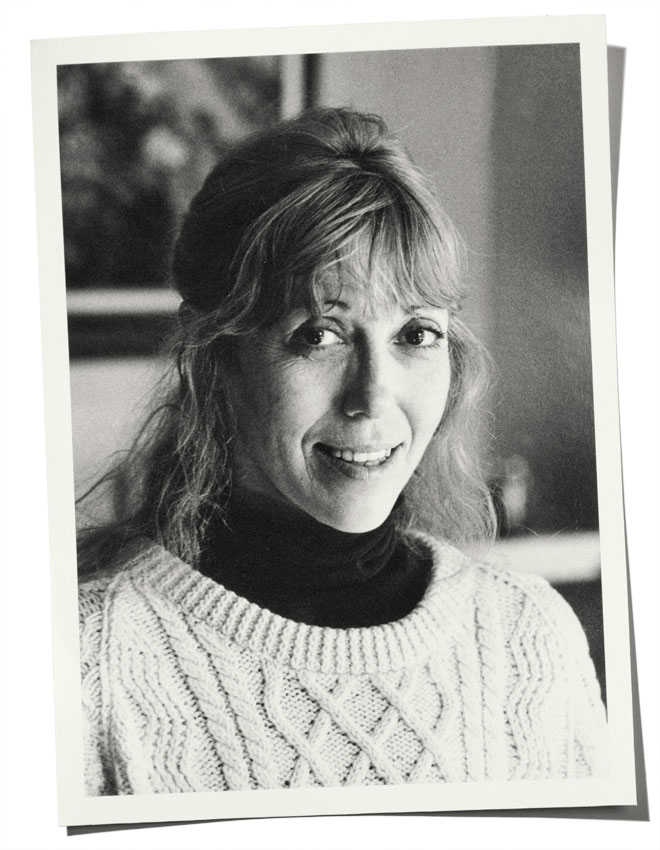

About Author

Dunn waited tables in the morning before her son woke up, and tended bars at night, painted houses, and did voice-over work. In the 1970s, she hosted a radio show on Portland's community radio station KBOO, in which she would read short stories. She taught advanced classes in creative writing at Oregon's Lewis & Clark College and a graduate course in creative writing at Pacific University in Forest Grove, Oregon.
In 1981, Dunn started writing about boxing in the Willamette Week She has been described as "one of the better boxing writers in the United States". She started boxing training in her 40s. She was an editor and contributor for the online boxing magazine cyberboxingzone.com. In the 1990s Dunn wrote a regular column on boxing for PDXS , in which she at one time provided detailed criticism of Evander Holyfield's sportsmanship in his controversial fight with Mike Tyson.
She won the Dorothea Lange—Paul Taylor Award in 2004 for her work on School of Hard Knocks: The Struggle for Survival in America’s Toughest Boxing Gyms. Her essays on boxing were collected in the 2009 anthology One Ring Circus: Dispatches from the World of Boxing. In 1989, Dunn's novel Geek Love was a finalist for the National Book Award. She described her memory of when she began writing it in the late 1970s, walking to Portland's Washington Park Rose Garden, contemplating nature versus nurture and the genesis of the book with its publication in 1989.
In 1989, Dunn announced that she was working on a fourth novel, entitled The Cut Man. She was living in Portland and working on the book in 1999. In 2008, it was reported that publisher Alfred A. Knopf had scheduled The Cut Man for release in September. The novel was not published at that time, but an excerpt appeared in the summer 2010 issue of The Paris Review under the title Rhonda Discovers Art. In 2012, Dunn reunited with Paul Pomerantz, her boyfriend from Reed College, and they married.Dunn died on May 11, 2016. Her son stated her death was due to complications of lung cancer.